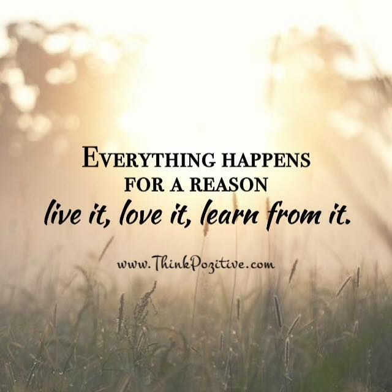

4th may, 2024
Upskilling: The Essential Pathway to Professional Growth
In today's rapidly evolving world, the landscape of work is constantly changing. With advancements in technology, shifts in industry demands, and the emergence of new job roles, staying relevant and competitive in the workforce has become more crucial than ever. One key strategy that individuals can adopt to ensure their continued success and advancement in their careers is upskilling. In this blog post, we will delve into why upskilling is not just beneficial but essential for personal and professional growth.
1.Upskilling is essential for several reasons:
Adapting to Technological Advancements: In today's fast-paced digital world, technology is constantly evolving, affecting various industries. Upskilling enables individuals to stay updated with the latest tools, software, and trends, ensuring they remain relevant in their professions.
2.Enhancing Employability: Employers are increasingly seeking candidates with up-to-date skills and knowledge. By upskilling, individuals can make themselves more attractive to potential employers and increase their chances of securing job opportunities or advancing in their current roles.
3.Improving Job Performance: Upskilling equips individuals with new skills and competencies that directly contribute to improved job performance. By mastering new techniques or deepening existing knowledge, employees can enhance their productivity, efficiency, and effectiveness in the workplace.
4.Unlocking Career Advancement Opportunities: Upskilling opens doors to new career advancement opportunities. Whether seeking promotions within their current organization or exploring opportunities in different industries, individuals who invest in their professional development are better positioned to achieve their career goals.
5.Future-proofing Careers: With the rise of automation and artificial intelligence, many traditional job roles are at risk of being replaced by technology. Upskilling allows individuals to future-proof their careers by acquiring skills that are less susceptible to automation, such as critical thinking, creativity, problem-solving, and emotional intelligence.
6.Staying Competitive: In today's competitive job market, continuous learning and upskilling are essential for staying ahead of the competition. By staying updated with industry trends and developments, individuals can differentiate themselves from their peers and stand out to potential employers.
Conclusion:
In conclusion, upskilling is not merely a choice but a necessity for anyone committed to their personal and professional growth. By continuously investing in learning and development, individuals can adapt to the changing demands of the workforce, enhance their job performance, unlock new career opportunities, and future-proof their careers against technological disruptions. Whether through formal education, online courses, workshops, or self-directed learning, the journey of upskilling is a transformative pathway to success in today's dynamic world of work.
4th may, 2024
Beyond the Resume: The Hidden Struggles of Experienced Professionals in the Job Market
When we think of job seekers, we often envision recent graduates or individuals early in their careers navigating the challenges of securing their first job. However, the reality is that experienced professionals, despite their wealth of skills and expertise, also face their share of struggles in the job market. In this blog post, we'll shed light on the hidden challenges experienced professionals encounter when seeking new opportunities and offer insights on how to overcome these obstacles with resilience and determination.
The Myth of Job Security:
One common misconception is that experienced professionals have job security due to their extensive experience and track record. However, the truth is that no one is immune to the uncertainties of the job market. Experienced professionals may find themselves unexpectedly facing job loss due to factors such as corporate restructuring, downsizing, or changes in industry dynamics. This sudden loss of employment can be a jarring experience, leaving professionals grappling with feelings of uncertainty, financial strain, and self-doubt.
Overqualification and Underemployment:
Experienced professionals often face the paradox of being overqualified for some roles while underqualified for others. Despite their impressive credentials, they may struggle to find opportunities that align with their skills, expertise, and salary expectations. This mismatch between qualifications and job opportunities can lead to frustration, as professionals find themselves either underemployed in roles that don't fully utilize their capabilities or facing rejection from employers who view them as overqualified.
Ageism and Bias:
Age discrimination remains a prevalent issue in the job market, with experienced professionals facing bias based on their age, particularly as they approach or exceed retirement age. Employers may harbor stereotypes about older workers, assuming they are less adaptable, tech-savvy, or innovative than their younger counterparts. This bias can manifest in subtle ways, such as being overlooked for promotions or opportunities for advancement, or more overtly through discriminatory hiring practices.
Skills Obsolescence:
In today's rapidly evolving job market, skills obsolescence is a significant concern for experienced professionals. Technologies, industries, and job roles are constantly evolving, rendering certain skills outdated or less relevant over time. Professionals who fail to keep pace with these changes risk becoming stagnant in their careers, hindering their ability to compete for new opportunities. Upskilling and continuous learning are essential for experienced professionals to remain competitive and adaptable in the ever-changing landscape of work.
Navigating the Job Market:
Despite these challenges, experienced professionals can take proactive steps to navigate the job market effectively:
1.Stay Relevant: Continuously update your skills and knowledge to stay current with industry trends and advancements.
2.Network Strategically: Build and leverage professional networks to uncover hidden job opportunities and gain insights into industry trends and hiring practices.
3.Tailor Your Approach: Customize your resume, cover letter, and interview responses to highlight your relevant experience and accomplishments for each role.
4.Showcase Your Value: Emphasize your unique strengths, expertise, and achievements that set you apart from other candidates.
5.Seek Support: Don't hesitate to seek guidance from career coaches, mentors, or support groups to navigate the challenges of job searching and career transition.
Conclusion:
Experienced professionals bring a wealth of skills, knowledge, and expertise to the table, yet they also face their own set of challenges in the job market. By recognizing and addressing these challenges head-on, experienced professionals can position themselves for success and unlock new opportunities for growth and advancement in their careers. With resilience, adaptability, and a proactive mindset, experienced professionals can overcome the obstacles of the job market and thrive in their professional endeavors.

4th may, 2024
Embracing the Power of Perspective: Understanding 'Everything Happens for a Reason'
Have you ever experienced a setback, disappointment, or unexpected turn of events, only to later realize that it led to something positive or meaningful in your life? The concept of "everything happens for a reason" is a belief that suggests there is purpose and meaning behind every experience, whether good or bad. In this blog post, we'll explore this thought-provoking idea and delve into the power of perspective in shaping our understanding of life's twists and turns.
The Philosophy Behind "Everything Happens for a Reason":
The notion that everything happens for a reason is deeply rooted in various philosophical and spiritual traditions. It suggests that the universe operates according to a predetermined plan or divine order, and that every event, circumstance, or encounter serves a greater purpose in the grand scheme of things. This perspective encourages individuals to trust in the inherent wisdom of life and to find meaning in even the most challenging or seemingly random experiences.
Navigating Life's Ups and Downs:
At first glance, the idea that everything happens for a reason can be comforting, providing solace in times of adversity and uncertainty. It encourages us to adopt a positive outlook and to trust that there is a silver lining to be found in every situation. However, embracing this belief also requires a willingness to surrender control and to accept that some things are beyond our understanding or control. It invites us to cultivate resilience, adaptability, and faith in the unfolding of life's journey.
Finding Meaning and Purpose:
While it's natural to question the fairness or logic of certain events, adopting a perspective of "everything happens for a reason" invites us to look beyond the surface and to seek deeper meaning and purpose in our experiences. It challenges us to reframe setbacks as opportunities for growth, to learn from our mistakes, and to appreciate the interconnectedness of all things. By embracing this philosophy, we can cultivate a sense of gratitude, resilience, and inner peace, knowing that even the most challenging moments contribute to our personal evolution and spiritual development.
Conclusion:
In the tapestry of life, every thread serves a purpose, contributing to the rich and intricate fabric of our existence. While the belief that "everything happens for a reason" may not provide all the answers or alleviate all our struggles, it offers a powerful lens through which to view the world—one that invites us to embrace the inherent mystery and beauty of life's journey. By cultivating a perspective of trust, acceptance, and gratitude, we can navigate life's ups and downs with grace and resilience, knowing that each experience, no matter how small or significant, has its place in the grand tapestry of existence.